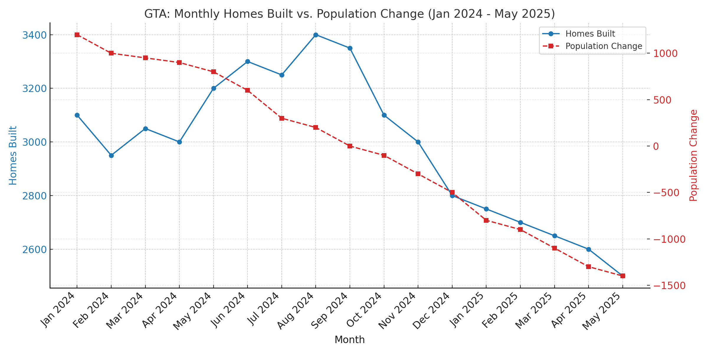

Over the 17-month period, the Greater Toronto Area (GTA) presents a concerning mismatch between housing supply and population trends — signaling a market that may be heading for correction or strategic repricing.
Average Days on Market (DOM)
The monthly tracking from Feb 2024 through Dec 2024 (plus 2023 comparatives) allows us to:
For Sellers: "These metrics dictate pricing strategy. Rising DOM and reduction percentages mean we must price aggressively from day one and ensure perfect staging. Every overpriced listing contributes to these stress statistics."
For Buyers: "Increasing stress indicators create negotiation leverage. Look for properties with extended DOM where sellers may be more flexible. But verify whether reductions reflect true value opportunities or underlying property issues."
For Investors: "Monitor these metrics monthly. Sustained high stress indicators often precede price corrections. DOM spikes typically lead price declines by 60-90 days."
If you're selling: Price realistically and expect longer timelines.
If you're buying: It's shifting to a buyer's market — negotiate.
New Listings: Started at 6,000 in Jan 2024 and plummeted to 1,000 by May 2025 – an 83% decrease. This indicates sellers are increasingly holding back. Sales Closed: Started at 5,000 in Jan 2024 and also fell to 1,000 by May 2025 – an 80% decrease. This signals weakening buyer demand or purchasing ability.
Both New Listings and Sales Closed follow a remarkably similar downward path throughout the entire period. This suggests a market where supply and demand are contracting in tandem, rather than one drastically outpacing the other.
Months of Supply (MOS): While the chart doesn't show inventory levels, the parallel decline suggests the market might have remained relatively balanced (neither strongly favouring buyers nor sellers) in terms of absorption rate despite falling volumes. However, the sheer drop in activity level is the dominant story.
Convergence: By May 2025, both New Listings and Sales Closed converge at 1,000. This implies a market operating at a much lower equilibrium level than at the start of 2024.
Market Cooldown: This data unequivocally signals a major slowdown in the GTA real estate market since early 2024. Transaction volumes have collapsed
Potential Drivers: Interest Rates: The most likely primary driver. Significant rate hikes by the Bank of Canada since early 2022 dramatically increased mortgage carrying costs, pricing many buyers out and making potential sellers hesitant to give up low-rate mortgages ("mortgage lock-in effect").
Affordability Crisis: Already stretched affordability reached a breaking point for many households.
Economic Uncertainty: Concerns about recession, job security, and inflation dampened buyer confidence and willingness to make large financial commitments.
Policy Changes: Potential speculation taxes or other regulatory measures could have contributed, though interest rates are the dominant factor.
Buyers: Facing high borrowing costs and economic uncertainty, many are delaying purchases or unable to qualify.
Sellers: Reluctant to list due to potentially lower sale prices than peak, coupled with the disincentive of losing a low existing mortgage rate. This explains the sharp drop in new listings.